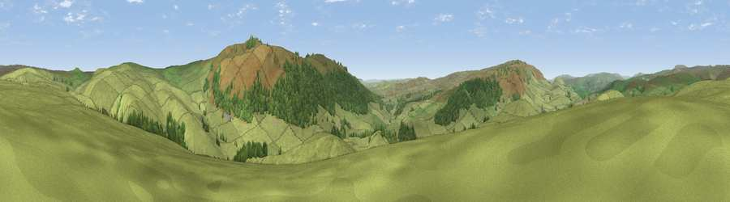

Whithill
#14141 in England · top 23% of its area beats it · near SkyreholmeThe view, rendered

A 360° render of this exact spot computed from the terrain model, tree cover and land cover — summer colours, afternoon light, calibrated against photographs of famous viewpoints. Real trees, hedges and buildings will differ in detail.
The panorama
Grey silhouette: terrain skyline in each direction (720 bearings, Earth curvature and refraction included). Dashed green: skyline with trees (+15 m) and buildings (+8 m) as obstacles. Blue strip: how far the ground is visible on each bearing.
Where the view opens
Wedge length = distance to the farthest visible ground on that bearing (vegetation-aware). Rings at 10, 25 and 50 km.
What fills the view
84% grassland · 16% woodland
Angular shares of the visible panorama (visual magnitude), not map area. Landscape diversity 0.20 (0–1 Shannon).
Key numbers
More beautiful places nearby
The staircase of upgrades: each row has a higher view potential than everything closer. Driving times are estimates from straight-line distance, calibrated against real road routing — check an actual route before setting out.
| Place | Direction | Drive | Score |
|---|---|---|---|
| Viewpoint near Skyreholme | SE · 2 km | ~6 min | 70.2 |
| Lord's Seat | ESE · 3 km | ~7 min | 71.1 |
| Cracoe Fell | WSW · 7 km | ~15 min | 75.1 |
| Viewpoint near Bewerley | ENE · 7 km | ~15 min | 75.7 |
| Viewpoint near Bewerley | ENE · 7 km | ~15 min | 76.8 |
| Viewpoint near Buckden | NNW · 20 km | ~34 min | 77.3 |
| Viewpoint near Otley | SE · 22 km | ~37 min | 77.5 |
| Viewpoint near East Witton | NNE · 25 km | ~41 min | 77.8 |
54.04561, -1.90948 · source: osm peak · position refined by local search. Computed location — check access rights before visiting.